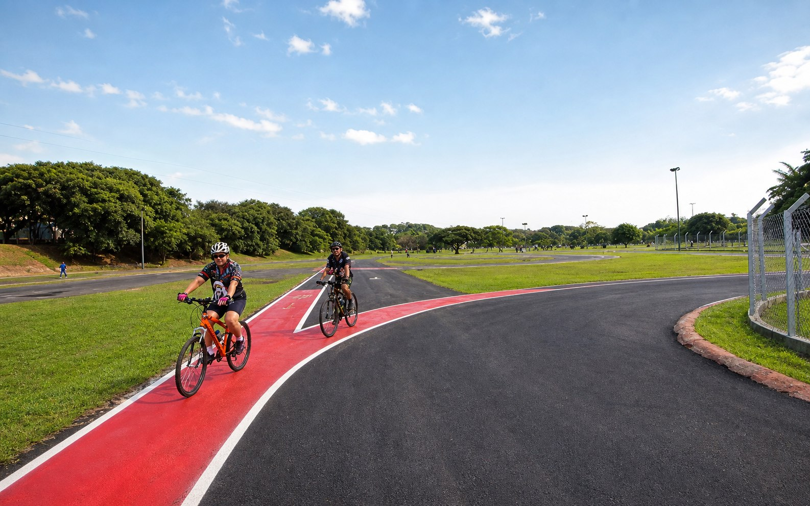
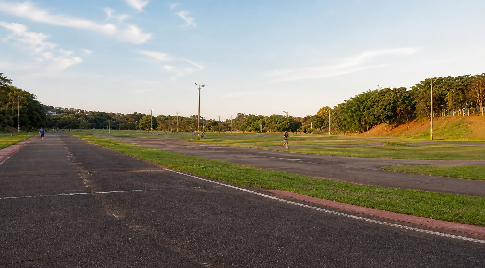

Origem
Um circuito desde 1973
Durante duas décadas, o Kartódromo foi um dos principais centros do kartismo paulista.
Pé Pedal Bentinho · Campinas, 2026
O antigo Kartódromo ganhou novos ritmos. Registre sua passagem por este circuito em um certificado personalizado.
Registro personalizado

Afrânio Ferreira Júnior
Inaugurado em 1973, o antigo Kartódromo Municipal une a memória do automobilismo aos novos ritmos de quem ocupa seu traçado.
Origem
Durante duas décadas, o Kartódromo foi um dos principais centros do kartismo paulista.
A pista hoje
O circuito revitalizado recebe bicicletas, caminhada, corrida e atividades para crianças.
Legado
Ayrton Senna treinou neste traçado, que também recebeu nomes como Rubens Barrichello e Felipe Massa.
Seu registro
“Uma volta que fica.”
Adicione uma foto, seu nome e uma nota para registrar sua experiência no Kartódromo.
Escolha uma foto, informe seu nome e dê uma nota de 0 a 5.
Escola e cidade
Antes das bicicletas, o ronco dos motores.
O Pé Pedal Bentinho é um evento anual da Escola Técnica Bento Quirino. Em 2026, os projetos dos cursos chegam ao Kartódromo Municipal Afrânio Ferreira Júnior para conversar com quem vive este circuito de 20 mil metros quadrados.
Encontre o evento Kartódromo Municipal Afrânio Ferreira Júnior
22°53' S · 47°03' O
Um retrato vivo do antigo Kartódromo do Taquaral. Passe o cursor sobre o mapa — ou arraste no celular — para percorrer o ponto mais próximo do traçado.
1 kmvolta completa
1973início da pista
Portão 6acesso ao espaço
Percurso automático iniciado.
Local
Espaço Afrânio Ferreira Júnior
Parque Taquaral · Campinas, SP